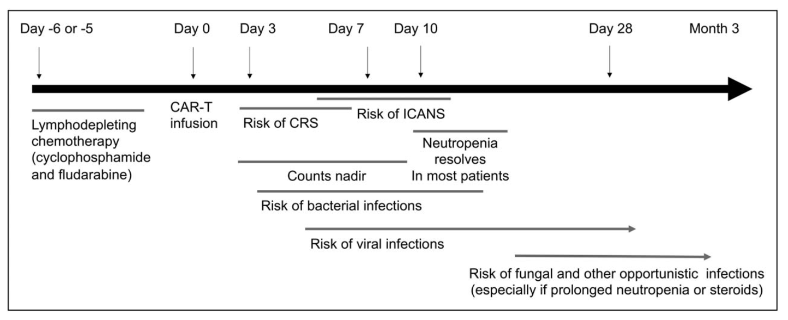

Infections in the Immunocompromised Host: General Principles
0.1 Slides
Web (HTML) version of lecture slides can be accessed here
PDF version of slides (interactive content will not work) can be accessed: here
0.2 Lecture notes
You can view the full lecture notes below, open them in a new window for better readability, or save as PDF.
1 Introduction
Given advances in medicine, including increased longevity and improved outcomes with various medical conditions, we are facing an ever-enlarging population of immunocompromised hosts. Although fairly heterogenous, it has been estimated that 6% of the population in the United States and between 4-6% of the Italian population and other Western Europena populations are immunocompromised (Martinson and Lapham, 2024). Using direct pharmaceutical claims in a large cohort of adults in the United States to describe the contemporary prevalence of drug-induced immunosuppression (including corticosteroids, antirejection medications, tumor necrosis factor inhibitors, antineoplastic agents, and other biologic medications), Wallace and colleagues found that 2.8% of the population met the criteria for drug-induced immunosuppression during the period January 1, 2018 through December 31, 2019 (Wallace et al., 2021). Using a broader definition, Clark and associates found that an estimated 1 in 5 people throughout the world were at risk for severe COVID-19, based on risk factors such as age, chronic kidney disease, diabetes, cardiovascular disease, and chronic respiratory disease (Clark et al., 2020). The immunocompromised host thus constitutes a sizeable and growing proportion of the population, with estimates contingent on the definition used.
A definition of those considered to have moderate-to-severe immune compromise, as determined by the United States Centers for Disease Control and Prevention (CDC) appears in Table 1. Factors to consider in assessing the general level of immunosuppression in an individual patient include disease severity, duration, clinical stability, complications, comorbidities, and any potentially immunosuppressive medications or therapies. In an era of increasingly complex medical care, many patients have extensive prior treatments and immunosuppression that render them at higher risk for infectious complications when they undergo subsequent therapies, such as transplant (hematopoietic cell or solid organ) or CAR-T cell therapy (Maschmeyer et al., 2019). Some agents, such as fludarabine, antithymocyte globulin, and alemtuzumab, can affect the immune system for many months afterward. In addition, complications such as mucositis, cytopenias, and surgical site infections can increase vulnerability for infection. Fortunately, some people who were previously considered to have significant immunocompromise, such as those persons living with HIV (PLWHIV) who have low CD4 counts but a robust response to antiretroviral therapy (ART), or those receiving less immunosuppressive cancer therapies than prior regimens would no longer be considered as having moderate-to-severe immune compromise.
| Immunocompromising Conditions and/or Therapies |
|---|
| Active treatment for solid tumor or hematologic malignancies |
| Immunosuppressive therapy for solid-organ transplant |
| CAR T-cell or hematopoietic stem cell transplant |
| Moderate or severe primary immunodeficiency (e.g., DiGeorge syndrome, Wiskott-Aldrich syndrome) |
| Advanced or untreated HIV infection |
| Active treatment with: |
| - High-dose corticosteroids (i.e., ≥20 mg prednisone or equivalent per day) |
| - Alkylating agents, antimetabolites |
| - Transplant-related immunosuppressive drugs |
| - Cancer chemotherapeutic agents classified as severely immunosuppressive |
| - Tumor-necrosis factor blockers and other biologic agents that are immunosuppressive or immunomodulatory |
1.1 The Net State of Immunosuppression
The “net state of immunosuppression,” a term originally described by Dr. Robert Rubin at Massachusetts General Hospital in Boston, represents a composite of host, underlying disease, treatment, and other factors that may contribute to an augmented risk of infection. Autoimmune diseases (i.e., lupus, rheumatoid arthritis, sarcoidosis, others) often have higher rates of infection, even without immunosuppressive therapies. Advanced organ disease, such as kidney, liver, heart, and lung disease for those awaiting organ transplant, as well as other comorbidities or conditions (i.e., poorly controlled diabetes, obesity, malnutrition, weight loss, hypogammaglobulinemia) and advanced age can all augment infection risk. Acute issues around the time of treatment, such as the need for renal replacement therapy, hemorrhage, long ischemic times and/or need for retransplantation of an organ, long intensive care unit stays, and extensive transfusion needs can all augment the risk of infection. Some concomitant infections, such as human immunodeficiency virus (HIV), cytomegalovirus (CMV), Epstein-Barr virus (EBV) or alterations in the microbiome can also contribute to the net state of immunosuppression. Certain infections can cause or contribute to secondary immune deficiencies, including lymphopenia, cytokine storm, and transient or long-term immunosuppression (Bonagura and Rosenthal, 2020). Exogenous immunosuppression is perhaps the most obvious contributor and is often used at higher doses initially followed by chronic doses (Roberts and Fishman, 2021). Treatment of organ transplant rejection or graft-versus-host disease (GVHD) can cause extended periods of high infection risk. It is important to consider an individual patient’s risk based on all these issues, and consider best methods of prevention, as well as most likely diagnoses in the setting of suspected infection.
The “net state of immunosuppression” is a composite measure that includes host factors, underlying disease, treatment effects, and other variables that contribute to infection risk. This concept helps clinicians assess individual patient risk and guide preventive strategies.
1.2 Infectious Complications and Mortality
Infectious complications result in significant morbidity and mortality in people with immunocompromise. In a cohort of solid organ transplant (SOT) recipients in Switzerland evaluated from 2008–2014, 6% died from infection within the first year after transplant (Delden et al., 2020). In a cohort of 804 renal transplant recipients in the German Center of Infectious Diseases, 55% had 972 infections in the first year after transplant, with about half occurring in the first 3 months, and of those infections, bacteria caused 66%, viruses caused 29%, and fungi caused 5% (Sommerer et al., 2022). Of the 15 patients who died, 6 succumbed to infection (40%). SOT recipients are at higher risk for surgical site infections and may have or have had hardware in situ (i.e., ureteric, biliary, tracheal, or prior ventricular assist device) that augments and complicates infections, sometimes resulting in persistent infections until the hardware can be removed.
The leading cause of mortality in hematopoietic cell transplant (HCT) recipients is relapse of primary disease, infection comes second. The Center for International Blood and Marrow Transplant Research (CIBMTR) reported that mortality for US stem cell transplant recipients (2015–2016) within the first 100 days was attributed to infection in 19% of HLA-matched sibling donor recipients and 21% of unmatched donor recipients (D’Souza and Fretham, 2018). Another series of over 15,000 adult and pediatric stem cell transplant recipients who survived at least 2 years after allogeneic transplant (Norkin et al., 2019) found a 30% mortality due to infection (primary or contributory). Those patients undergoing chimeric antigen receptor (CAR-T) cell therapy are often profoundly immunosuppressed; up to one-third of patients will suffer a serious bacterial infection in the first 30 days after therapy (Stewart and Henden, 2021).
The type of HSCT profoundly shapes the nature and duration of immunosuppression and therefore the infection risk profile. Table 2 summarizes the major HSCT categories and their associated immunosuppressive burden.
| Type | Stem Cell Source | Donor | Immunosuppression |
|---|---|---|---|
| Autologous | Peripheral blood, bone marrow | Self | Moderate; no GvHD prophylaxis required; immune recovery within weeks |
| Allogeneic — matched related | Peripheral blood, bone marrow, umbilical cord blood | HLA-matched sibling or family member | Severe; prolonged due to GvHD prophylaxis and risk of GvHD |
| Allogeneic — matched unrelated (MUD) | Peripheral blood, bone marrow, umbilical cord blood | HLA-matched unrelated donor (registry) | Very severe; higher GvHD risk than matched related; intensive prophylaxis required |
| Allogeneic — haploidentical | Peripheral blood, bone marrow | Half-matched family member (parent, child, sibling) | Very severe; requires intensive T-cell depletion or post-transplant cyclophosphamide |
| Allogeneic — umbilical cord blood | Umbilical cord blood | Unrelated cord blood unit | Very severe; delayed immune reconstitution due to low cell dose |
 T Cell Therapy_ Vein-to-Vein Process.png)


Many biologic therapies (such as monoclonal antibodies) can contribute to infection risk (Davis et al., 2020). Given a relative lack of data on infectious outcomes, the fact that most trials of biologic agents are geared for therapeutic efficacy rather than infection outcomes, and poor post-licensure reporting (especially for nonmandatory reportable diseases), it is challenging to estimate the real risk of infection associated with biologic therapies (Tau et al., 2019). Furthermore, the drug’s mechanism of action does not always predict infection risk, which can be reflected by multiple complex variables; for example, the augmented risk of progressive multifocal leukoencephalopathy (PML) in persons who receive rituximab (anti-CD20) is a function of both T cell and humoral (B cell) immunodeficiency, which combine to control latent JC virus (Kelesidis et al., 2011). Thus risks with rituximab exposure are variable and related not just to the drug exposure but also underlying disease and prior therapies that modulate T-cell responses. Concomitant immunosuppression is common, and many biologic agents have a long half-life; therefore identifying specific risks for infections is difficult, especially for opportunistic infections that are rare.
1.3 Measuring Immunosuppression
Measuring the extent of immunosuppression has been a long sought-after goal. In PLWHIV, much is known about how the absolute CD4 count, CD4 percentage, and CD4/CD8 ratio correlate with risk of specific infections. Neutropenia and lymphopenia have been shown to correlate with an augmented risk. A low absolute lymphocyte count has been shown to increase the risk of cytomegalovirus after SOT both after the end of prophylaxis and after the end of treatment of active disease (Gardiner et al., 2018; Meesing and Razonable, 2018). Severe hypogammaglobulinemia predisposes to infection, supporting monitoring with replacement. Unfortunately, there are few other useful tools to correct immunodeficiency, especially for the many immunocompromised patients who have normal white blood cell profiles and immunoglobulin levels.
Markers to quantify or predict infection risk are few. Some of the human herpes viruses (Epstein Barr virus, cytomegalovirus, HHV-6, HHV-7) as well as torque teno virus (TTV) and BK virus have been shown to increase along with the net state of immunosuppression (Dendle et al., 2019). Inflammatory markers such as the erythrocyte sedimentation rate, C-reactive protein, and procalcitonin have not been shown to be predictive markers in this population. QuantiFERON Monitor, which measures interferon-γ (IFN-γ) after stimulation with innate and adaptive immune antigens, has been shown in early work to identify overly immunosuppressed lung transplant recipients who could be targeted for reduction of immunosuppression (Gardiner et al., 2021). The ImmuKnow assay, which detects intracellular adenosine triphosphate production from activated CD4+ T cells after incubation with phytohemagglutinin, has also been shown to correlate with the risk of infection and rejection in organ transplant recipients, although clinical trials to support its use are lacking and clinical uptake has been limited (Imlay et al., 2023). The assay workflow is illustrated in Figure 4.

Therapeutic drug monitoring of immunosuppression can be done for only a limited number of agents (i.e., tacrolimus, cyclosporine, sirolimus), and when used in isolation does not correlate with risk of infection in an individual. At this time, the available evidence is insufficient to support the use of any one single or composite panel of diagnostic tests or algorithms to guide the clinician to determine the extent of immunosuppression and risk of infection.
2 Sources and Risks of Various Infections
A plethora of pathogens can infect the immunocompromised host, from many different sources, with the most common mimicking those that occur and/or are acquired in the community. Some have postulated that immunosuppressed persons may serve as “sentinel chickens,” as the first to be affected by a community outbreak. In addition, given the augmented frequency with which they are in contact with health care settings, these patients are at higher risk for multidrug resistant and other nosocomial organisms, including percutaneous intravascular devices, pneumonia, and urinary tract infections, as well as Norovirus and Clostridioides difficile. Immunosuppressed persons are also at risk for reactivation of latent infections, such as Mycobacterium tuberculosis, Strongyloides, hepatitis B, Coccidioides, Histoplasma, and Trypanosoma cruzi (the etiologic agent of Chagas disease). Donor-derived infections, acquired from the organ transplant, stem cell transplant, blood products, or other tissues, may occur, especially in the first 6 months after transplant. Persons who travel are at risk of exposure to endemic infections that may become clinically apparent after return from travel.
Solid organ and stem cell transplant recipients are at highest risk for infection in the first 100 days after transplant, with the risk gradually falling over the next 1–2 years. Similarly, patients treated with more intense immunosuppressive regimens for autoimmune diseases are at higher risk in the first few months after treatment is started. Some infections may occur much later, such as PML in patients on natalizumab, hepatitis B in those on rituximab, or shingles in those with autoimmune disease.
Solid organ and stem cell transplant recipients are at highest risk for infection in the first 100 days after transplant, with the risk gradually falling over the next 1–2 years. The timing of specific infections varies based on the type of immunosuppression and prophylactic strategies used.
Active prophylaxis, often given as per local protocol, alters the risk of the various infections and can help guide the differential diagnosis. Prophylaxis against Pneumocystis includes trimethoprim-sulfamethoxazole, which can prevent a variety of other pathogens, ranging from Toxoplasma to Staphylococcus aureus and Nocardia, as well as numerous other gram-positive and gram-negative organisms. Substitutes such as atovaquone, dapsone, and inhaled pentamidine have much narrower coverage with many more breakthrough infections seen.
Trimethoprim-sulfamethoxazole prophylaxis against Pneumocystis also provides coverage against Toxoplasma, Staphylococcus aureus, Nocardia, and numerous other gram-positive and gram-negative organisms. Substitutes such as atovaquone, dapsone, and inhaled pentamidine have much narrower coverage.
Anti-herpes viral prophylaxis with valganciclovir, letermovir, acyclovir, valacyclovir, and famciclovir can greatly decrease the risk for CMV, herpes simplex, and disseminated zoster. Individualized prophylaxis with isoniazid or rifampin for latent tuberculosis, ivermectin for Strongyloides, antiviral therapy or routine screening for those at risk for reactivation hepatitis B, and antifungal therapy for those with latent Coccidioides can significantly decrease infectious complications. Pre-immunosuppression vaccination, when possible, along with subsequent appropriate vaccination (optimally during periods of lower or no immunosuppression) also decreases the risk of vaccine-preventable illness.
Discussing exposure history with the patient and family may be useful in guiding the differential diagnosis. For example, those who garden without masks or skin protection may be at higher risk for infection from molds, Nocardia, nontuberculous mycobacteria, and other bacterial infections. Lack of routine dental care augments the risk of bacteremia due to oral flora and infections from Actinomyces. Those who smoke marijuana may be at higher risk for infections from Aspergillus and other molds. Teachers and other childcare workers may have higher rates of exposure to respiratory and gastrointestinal (GI) viruses. Swimming in warm ocean waters and consumption of raw seafood augments the risk of Vibrio and other infections. Dedicated education on these topics may decrease the risk of infection.
Table 3 summarizes the types of infections that occur in people with different types of immune compromise. Immune defenses are summarized below. Readers should refer to specific chapters for detailed discussion on infections and clinical approaches.
3 Components of Host Defense
3.1 Cellular and Humoral Immunity
Host defense against pathogenic microorganisms includes innate and acquired immunity. The innate immune system comprises both cellular components, including monocytes, neutrophils, natural killer (NK) cells, and innate lymphoid cells; humoral components include complement, some antibodies (“natural” antibodies, perhaps directed against normal microbiota), antimicrobial peptides, and lysozyme. This mechanism is very effective in dealing with the vast majority of infectious agents. The innate immune system not only specifically recognizes various classes of microorganisms via pattern recognition receptors (microbe-associated molecular patterns) that sense conserved structures of the invading microorganisms, but also initiates and modulates the subsequent adaptive responses delivered by T cells and B cells through their interaction with antigen-presenting cells (especially dendritic cells) (Quintana-Murci et al., 2007).
3.2 Innate Immunity
3.2.1 Granulocytes

Virtually all cytotoxic drugs used in the treatment of malignant diseases have a deleterious effect on the proliferation of normal hematopoietic progenitor cells. Therefore, after obliteration of the mitotic pool and depletion of the marrow pool reserve, neutropenia ensues (Takizawa et al., 2012). Likewise, therapeutic radiation can induce clinically important neutropenia, depending on the dose rate, total dose given, and irradiated area of the body. Total-body irradiation, as used to prepare for hematopoietic stem cell transplant (HCT), is the most obvious illustration of the possible negative impact of irradiation. Thus, profound neutropenia is an unavoidable consequence of the treatment of malignancy and may persist for 3 or 4 weeks or even longer. In these patients, neutropenia or a treatment-related decrease in the granulocyte count is probably the most important primary risk factor for infection. Iatrogenic neutropenia can occur in anyone exposed to drugs or insults (e.g., radiation) that have an impact on the bone marrow; risks for infection increase proportionally with depth and duration of neutropenia as well as compromise to other organ function (Bodey et al., 1966).
Granulocytes that accumulate at the site of infection are of little use if they are unable to function normally. Some antineoplastic drugs and irradiation interfere with these nonproliferating cells and their function, resulting in decreased chemotaxis, diminished phagocytic capacity, and defective intracellular killing by granulocytes. Glucocorticosteroids seem to enhance granulocytopoiesis and mobilize the marginal and the marrow pool reserve, but these putative positive effects on neutrophilic granulocytes are offset by numerous disadvantages. These drugs curb the accumulation of neutrophils at the site of inflammation by reducing their adherent capacity and diminishing their chemotactic activity. Furthermore, they decrease phagocytosis and intracellular killing of microorganisms. The lack of functioning neutrophils deprives the host of a primary defense mechanism against invading microorganisms, which can consequently initiate local infection and disseminate unhindered.
3.2.2 Monocytes and Macrophages
Monocytes reside in the bloodstream and contribute to rapid responses against invading bacteria and fungi. Monocytopenia can occur in parallel with neutropenia and sometimes be overlooked as a risk for infection.
Activation of macrophages is a complex process, primarily under the control of cytokines (e.g., IFN-γ) provided by T lymphocytes. This at least partially explains susceptibility to infection in people who have cellular immunosuppression or deficiency associated with underlying disease. It is important to remember that some targeted biologic therapies can have more general risks not otherwise predicted by their mechanism of action. An example is ibrutinib, a specific inhibitor of B-cell signaling through Bruton tyrosine kinase (BTK), used in some people with lymphoid malignancies. Studies have shown heightened risks for pulmonary and disseminated aspergillosis, especially in people receiving concurrent glucocorticoid therapy, now considered to be largely mediated by a secondary impact on function of other immune cells, including monocyte/macrophages, granulocytes, and possibly lymphocytes (Figure 6, Figure 7).


3.2.3 Natural Killer Cells
NK cells are cytotoxic lymphocytes belonging to the pool of innate lymphoid cells, responding primarily to viruses and malignant cells. Depletion of NK cells by monoclonal antibodies or dysfunction during transplant immunosuppression contributes to the overall susceptibility to viral and probably fungal infections. The surface receptor CD56 of NK cells is a pattern recognition receptor of Aspergillus fumigatus and plays a role in fungus-mediated NK cell activation.
3.2.4 Platelets
Not typically considered a significant component of innate immunity, recent studies outline potential protective roles of platelets against bacterial and fungal infections. Thrombocytopenia appears to be an independent risk factor for bacteremia (Gafter-Gvili et al., 2011). Although the role of thrombocytopenia in conferring risks for infection is difficult to interpret from clinical studies because of other concurrent immunosuppression, animal models have shown that platelets may be particularly important in protection against both yeast and mold infections (Tischler et al., 2020).
3.3 Acquired Immunity
3.3.1 Cellular Immunity

Both antigen-specific and antigen-nonspecific cells contribute to the development of cellular immunity. This fine-tuned system can easily be dysregulated as a result of a disease or its treatment. Long-term cytotoxic therapy, extensive irradiation, and immunosuppressive drugs such as corticosteroids, azathioprine, cyclosporine, tacrolimus, and the mammalian target of rapamycin (mTOR) inhibitors sirolimus and everolimus suppress cellular immunity. Some monoclonal antibodies, such as alemtuzumab, are being used as antitumor and immunosuppressive agents and can exert profound and prolonged effects on cellular immunity. Purine analogues, including fludarabine and cladribine, are particularly detrimental to cellular immunity and create a situation similar to acquired immunodeficiency syndrome. Likewise, lymphatic malignancies, particularly Hodgkin lymphoma and chronic lymphocytic leukemia (CLL), are associated with impaired cellular immunity. Emerging targeted therapies—including the TKIs imatinib, dasatinib, and bosutinib; small molecules such as BCL2 inhibitors (venetoclax); JAK-STAT inhibitors; and PI3K inhibitors, often used in heavily pretreated patients—have an impact on specific cellular immunity. This is exemplified by the occurrence of opportunistic infections with the use of ruxolitinib (M. tuberculosis and hepatitis B reactivation), ibrutinib (aspergillosis), and idelalisib (Pneumocystis jirovecii). On the contrary, the use of immunomodulatory drugs (lenalidomide) or proteasome inhibitor drugs (bortezomib) increases the risk of severe nonspecific infections, especially in the relapsed/refractory phase of multiple myeloma and mostly as a result of therapy-related neutropenia (Teh et al., 2016).
3.3.2 Humoral Immunity
The humoral branch of the immune system, which is primarily responsible for clearing extracellular bacteria, involves the interaction of B cells with antigen and their subsequent proliferation and differentiation into antibody-secreting plasma cells. The production of immunoglobulins is decreased in lymphoproliferative disorders such as CLL and multiple myeloma, whereas humoral immunity is generally well preserved in patients with acute leukemia. However, intensive irradiation and chemotherapy may lead not only to neutropenia but also, ultimately, to hypogammaglobulinemia. In particular, monoclonal antibodies such as rituximab and blinatumomab and CD19- and CD22-targeted CAR-T cells deplete B lymphocytes, may induce profound and long-lasting hypogammaglobulinemia and infections (Brudno and Kochenderfer, 2016; Maude et al., 2015).
Cytokines and chemokines are indispensable for communication between innate and acquired immune and nonimmune cells in shaping effective antimicrobial immune reactions. Hence, interference by anticytokine antibodies and cytokine scavengers (e.g., infliximab, anakinra, tocilizumab) results in increased risk for infection in autoimmune diseases, transplantation, and cancer therapy (Grijalva et al., 2011).
The primary immunoglobulin response of spleen-produced specific opsonizing antibodies is necessary for efficient phagocytosis of encapsulated bacteria. Splenectomy may result in a reduced level of the complement factor properdin, thereby leading to suboptimal opsonization, a decrease in functional tuftsin, and low levels of circulating IgM (Van der Meer, 1994).
The lack of opsonizing antibodies in serum against common encapsulated bacteria impairs the activity of all phagocytic cells, including granulocytes, monocytes, and macrophages. As a consequence, infections with Streptococcus pneumoniae and Haemophilus influenzae are often more severe in splenectomized patients and in those who have undergone procedures, such as some recipients of HCT, that make them functionally asplenic.
3.4 The Integument as Host Defense
The skin, the respiratory tract (including the nasal cavity), the ears and conjunctivae, the alimentary tract, and the genitourinary tract are in contact with the environment and provide a first line of defense against microbial invasion.
3.4.1 Skin
Immunosuppressive treatments, such as chemotherapy and irradiation can cause radical changes in healthy skin that cause hair loss, dryness, and loss of sweat production. Needle punctures and catheters provide a ready means of access for microorganisms through the stratum corneum and into the bloodstream (Roth and James, 1988). When the skin is broken, the release of fibronectin is thought to assist colonization with S. aureus, whereas other changes facilitate infection with gram-negative bacilli such as Acinetobacter baumannii, enteric bacteria, and fungi. For a detailed discussion on catheter-related infections, see the relevant clinical chapters.
3.4.2 Oropharynx
Mucous membranes lining the oropharynx and salivary glands constitute a special first line of defense. However, a complex relationship exists between oral microorganisms and their host, and this equilibrium may easily be disturbed by immunosuppressive treatment. Concurrent antibiotics, corticosteroids, and loss of saliva production (xerostomia) through surgery, drugs, or irradiation lead to modification of this barrier function and to overgrowth of enteric microorganisms. As a result, oral candidiasis (thrush) and bacterial infections, including those caused by the oral microbiome, occur with increased frequency in patients who receive intensive treatment for malignant disorders.
3.4.3 Alimentary Tract
The ecology of the intestine is determined by the interaction of host factors with the endogenous microorganisms that colonize the alimentary tract (Van der Waaij, 1989). Antibiotic-induced changes in the gut microbiome predispose to acquisition of exogenous pathogens, with a particular risk for Clostridioides difficile infection. High-dose chemotherapy damages gut epithelium, the so-called mucosal barrier injury, which facilitates translocation of aerobic intestinal bacteria. The concomitant immunosuppression-related neutropenia allows for mucosal infection to progress to bacteremia and sepsis (Hooper and Gordon, 2001).
3.5 Immunomodulatory Therapy Toxicities
Checkpoint inhibitors and other immunomodulatory therapies can cause adverse reactions in many organ systems. Recognizing these is essential because, although they affect immunocompromised hosts, these adverse reactions often mimic clinical presentations of infections. Affected organs include the skin, endocrine glands, lung, gastrointestinal tract, liver, and heart (Haanen et al., 2017).
3.7 Common Fungal Infections
Invasive fungal disease is a serious complication of acute leukemia, high-dose chemotherapy, and stem cell and solid organ transplant (Hammond et al., 2010; Pergam, 2017). After HCT, invasive mold infections may occur during neutropenia or GVHD (Lindsay et al., 2023; Marr, 2010). Influenza can be a serious problem in transplant recipients (Ison, 2010). Non-infectious pulmonary syndromes are also common in transplant recipients (Vande and Madtes, 2017).
3.8 Common Bacterial Infections
Bacteremia remains a significant problem in immunocompromised hosts, with gram-negative infections becoming more common and potentially multidrug resistant (Neofytos et al., 2023; Zimmer et al., 2022). Antimicrobial resistance, including vancomycin-resistant Enterococcus, is a major concern (Ford et al., 2017; Gottesdiener and Satlin, 2023; Ubeda et al., 2010). Gram-negative resistance, including to Pseudomonas aeruginosa, is also increasing (Hernandez-Jimenez et al., 2022). Stenotrophomonas maltophila is an increasingly recognized pathogen (Saburi et al., 2023).
Nontuberculous mycobacteria cause infections in solid organ transplant recipients and those with other immunosuppression (Abad and Razonable, 2016; Tabaja et al., 2022). Some cases may be due to interferon-gamma autoantibodies (Valour et al., 2016).
| DEFECT | PATHOGEN |
|---|---|
| Neutropenia | |
| Gram-positive cocci: | |
| Staphylococcus aureus | |
| Coagulase-negative staphylococci (S. epidermidis, S. haemolyticus, S. hominis) | |
| Viridans-group streptococci (S. mitis, S. oralis) | |
| Granulicatella and Abiotrophia spp. (formerly nutritionally variant streptococci) | |
| Enterococci (E. faecalis, E. faecium) | |
| Gram-negative bacilli: | |
| Escherichia coli | |
| Pseudomonas aeruginosa | |
| Klebsiella pneumoniae | |
| Enterobacter and Citrobacter spp. | |
| Damaged integument | |
| Skin and central venous catheter related | Coagulase-negative staphylococci (S. epidermidis, S. haemolyticus, S. hominis) |
| Staphylococcus aureus | |
| Stenotrophomonas maltophilia | |
| Pseudomonas aeruginosa | |
| Acinetobacter spp. | |
| Corynebacterium | |
| Candida spp. (C. albicans, C. parapsilosis) | |
| Rhizopus spp. | |
| Oral mucositis | Viridans-group streptococci (S. mitis, S. oralis) |
| Abiotrophia and Granulicatella spp. (nutritionally variant streptococci) | |
| Capnocytophaga spp. | |
| Fusobacterium spp. | |
| Rothia mucilaginosa | |
| Candida spp. (C. albicans, C. tropicalis, C. glabrata) | |
| Herpes simplex virus | |
| Gut mucosal barrier injury | Escherichia coli, Pseudomonas aeruginosa |
| Coagulase-negative staphylococci | |
| Enterococci (E. faecalis, E. faecium) | |
| Candida spp. | |
| Viridans-group streptococci (S. oralis, S. mitis) | |
| Neutropenic enterocolitis | Clostridium spp. (C. septicum, C. tertium) |
| Staphylococcus aureus | |
| Pseudomonas aeruginosa | |
| Impaired cellular immunity | Herpesviruses |
| Cytomegalovirus | |
| Respiratory viruses | |
| Listeria monocytogenes | |
| Nocardia spp. | |
| Mycobacterium tuberculosis | |
| Nontuberculous mycobacteria | |
| Pneumocystis jirovecii | |
| Aspergillus spp. | |
| Cryptococcus spp. | |
| Histoplasma capsulatum | |
| Coccidioides spp. | |
| Talaromyces marneffei | |
| Toxoplasma gondii | |
| Human papillomavirus | |
| Polyomavirus (BK, JC, and others) | |
| Impaired humoral immunity | Streptococcus pneumoniae |
| Haemophilus influenzae | |
| Norovirus | |
| Hepatitis B virus | |
| Polyoma virus (JC) | |
| Campylobacter/Helicobacter | |
| Compromised organ function | |
| Splenectomy | Streptococcus pneumoniae |
| Haemophilus influenzae | |
| Neisseria meningitidis | |
| Capnocytophaga canimorsus | |
| Deferoxamine for iron overload | Rhizopus spp. |
| Targeted drugs | |
| Bruton tyrosine kinase inhibitor (ibrutinib); a specific inhibitor of B-lymphocyte signaling | Aspergillus spp. |
| Pneumocystis jirovecii | |
| JAK-STAT inhibitor (ruxolitinib); downregulates proinflammatory cytokines, impairs dendritic cell, natural killer cell, and CD4+ T-cell function | Mycobacterium tuberculosis |
| Hepatitis B reactivation | |
| PI3K inhibitor (idelalisib); specific inhibitor of phosphatidylinositol 3-kinase delta-Akt pathway B-lymphocyte signaling | Pneumocystis jirovecii |
4 Prevention Strategies
Infection prevention in immunocompromised hosts requires a systematic, layered approach tailored to the specific type and degree of immunosuppression. A combination of pre-treatment screening, targeted antimicrobial prophylaxis, vaccination, and environmental measures can substantially reduce infectious morbidity. The prophylactic strategy should be re-evaluated as immune status evolves over time.
4.1 Pre-Immunosuppression Screening
Evaluation prior to initiating immunosuppressive therapy is essential to identify latent infections that may reactivate once immune defenses are suppressed. Table 4 summarizes key pathogens to evaluate before transplantation or other major immunosuppressive therapy. Results may inform pre-emptive treatment, modification of the immunosuppressive regimen, or timing of vaccination. Wherever possible, screening should be completed before therapy is started; positive findings may necessitate a delay or dose modification of planned immunosuppression until preventive treatment is established.
| Pathogen | Test | Action if Positive |
|---|---|---|
| Mycobacterium tuberculosis | IGRA (QuantiFERON) or TST | Isoniazid or rifampin prophylaxis |
| Hepatitis B virus | HBsAg, anti-HBc total, anti-HBs | Antiviral prophylaxis (entecavir or tenofovir) |
| Hepatitis C virus | Anti-HCV, HCV RNA | Treat before immunosuppression if feasible |
| HIV | Fourth-generation Ag/Ab assay | ART optimization |
| Strongyloides stercoralis | Serology (endemic regions or travel history) | Ivermectin, two doses two weeks apart |
| Trypanosoma cruzi | Serology (Latin American origin) | Benznidazole prophylaxis |
| Varicella-zoster virus | IgG serology | Vaccinate if seronegative ≥4 weeks before therapy |
| Coccidioides, Histoplasma | Serology (endemic exposure) | Antifungal prophylaxis if seropositive and high-risk regimen planned |
Pre-treatment screening is not a one-time checklist. Results should be reviewed at each major escalation of immunosuppression, since patients may have acquired new latent infections in the interval since prior screening.
4.2 Antimicrobial Prophylaxis
4.2.1 Pneumocystis jirovecii and Broad-Spectrum Bacterial Prophylaxis
Trimethoprim-sulfamethoxazole (TMP-SMX) is the cornerstone prophylactic agent against Pneumocystis jirovecii pneumonia (PJP), typically administered as one double-strength (DS) tablet daily or three times weekly (e.g., Monday–Wednesday–Friday). Its spectrum extends well beyond PJP: TMP-SMX also provides coverage against Toxoplasma gondii, Staphylococcus aureus, Nocardia species, and many gram-positive and gram-negative organisms, making it one of the most cost-effective preventive agents available. Adherence can be limited by rash, gastrointestinal intolerance, and cytopenias. In these cases, alternative agents such as atovaquone, dapsone, or inhaled pentamidine may be substituted, though they have significantly narrower coverage and higher rates of breakthrough infections. Folic acid supplementation should be considered in patients with concurrent anemia or leukopenia receiving TMP-SMX.
Fluoroquinolone antibacterial prophylaxis (typically levofloxacin) during prolonged neutropenia reduces febrile episodes and gram-negative bacteremia but remains controversial due to selection pressure for resistant organisms; its use should be guided by local institutional epidemiology.
4.2.2 Antifungal Prophylaxis
Antifungal prophylaxis should be risk-stratified based on the specific type and degree of immunosuppression (Table 5). Patients at highest risk for invasive mold infections—including those undergoing AML induction chemotherapy, allogeneic HSCT, or those with active GVHD requiring high-dose corticosteroids—benefit from mold-active azole prophylaxis. Posaconazole delayed-release tablets are preferred over the oral suspension due to more reliable bioavailability. All azoles inhibit CYP3A4 and necessitate dose adjustment of calcineurin inhibitors (tacrolimus, cyclosporine) and mTOR inhibitors (sirolimus, everolimus) when co-administered.
| Risk Category | Representative Conditions | Recommended Agent(s) |
|---|---|---|
| High risk (mold-active prophylaxis) | AML induction/consolidation; allogeneic HSCT; active GVHD on high-dose steroids; lung transplant recipients | Posaconazole (preferred); voriconazole (alternative); micafungin IV (if oral not tolerated) |
| Intermediate risk (Candida prophylaxis) | Autologous HSCT; neutropenia >7 days with mucositis; broad-spectrum antibiotics | Fluconazole; micafungin |
| Low risk | SOT recipients on standard maintenance immunosuppression | Not routinely indicated beyond perioperative period |
4.2.3 Hepatitis B Reactivation Prevention
HBV reactivation is a critical and underrecognized complication that can occur with virtually any immunosuppressive regimen, but is most pronounced with rituximab and anti-CD20 agents, anthracycline-based chemotherapy, high-dose corticosteroids (≥20 mg prednisone-equivalent per day for ≥4 weeks), and stem cell transplantation. Without prophylaxis, reactivation carries a mortality risk of up to 25%. HBsAg-positive patients should always receive antiviral prophylaxis. HBsAg-negative/anti-HBc-positive patients (occult infection) require prophylaxis when high-risk regimens are used. Entecavir is the preferred agent due to its high barrier to resistance; tenofovir (TDF or TAF) is an acceptable alternative. Prophylaxis should continue for 6–12 months after cessation of immunosuppression, or 18–24 months following anti-CD20 therapy. HBV DNA should be monitored every 1–3 months during therapy; a rising HBV DNA despite prophylaxis warrants resistance testing and regimen change.
4.2.4 CMV Prevention: Prophylactic vs. Preemptive Strategies
Two complementary approaches exist for preventing CMV disease in high-risk patients. Universal prophylaxis administers antiviral therapy for a defined at-risk period to all patients above a risk threshold. Letermovir is preferred for CMV-seropositive allogeneic HSCT recipients and high-risk donor-positive/recipient-negative (D+/R−) combinations due to its favorable tolerability profile compared with valganciclovir, which is associated with dose-limiting myelosuppression. In SOT recipients, particularly lung and heart transplant patients, valganciclovir remains the primary prophylactic agent.
Preemptive therapy involves regular CMV PCR surveillance (every 1–2 weeks) with treatment initiated when viral load crosses a predetermined threshold, before the development of clinical disease. This approach reduces total antiviral drug exposure and cost but requires rigorous laboratory monitoring and may miss patients with rapid viral progression. The choice between approaches depends on donor/recipient CMV serostatus, transplant type, and institutional capacity. D+/R− allogeneic HSCT recipients face the highest CMV risk and benefit most from universal prophylaxis. Late-onset CMV after completion of prophylaxis remains a clinically important concern under both strategies.
4.3 Vaccination
4.3.1 General Principles
Live attenuated vaccines—including measles-mumps-rubella (MMR), varicella, yellow fever, and live attenuated influenza—are contraindicated during significant immunosuppression due to risk of vaccine-strain dissemination. Inactivated vaccines are generally safe throughout the immunosuppressive period but often produce blunted responses. Whenever possible, vaccination should be completed at least 2 weeks before initiating immunosuppressive therapy, when immune responses are more likely to be robust. Serologic confirmation of response (e.g., anti-HBs, anti-VZV IgG) is advisable in severely immunocompromised patients, as responses may be inadequate and repeat dosing may be required. Household contacts and close caregivers should also receive age-appropriate vaccines—including annual inactivated influenza and varicella—to create a “cocooning” effect.
4.3.2 Solid Organ Transplant Recipients
The optimal window for vaccination in SOT candidates is the pre-transplant period, as post-transplant responses are substantially reduced by maintenance immunosuppression. Table 6 summarizes recommended vaccines and timing for SOT recipients. Live vaccines must not be administered after transplantation. Seronegative candidates (VZV, measles) should receive live vaccines at least 4 weeks before the anticipated transplant date.
| Vaccine | Pre-transplant | Post-transplant | Notes |
|---|---|---|---|
| Influenza (inactivated) | ✓ Annually | ✓ Annually (≥1 month post-Tx) | Live attenuated influenza: contraindicated post-transplant |
| Pneumococcal (PCV20) | ✓ ≥2 weeks before | ✓ ≥3–6 months post-Tx | PPSV23 booster at 5 years if PCV15 series used |
| COVID-19 (mRNA) | ✓ | ✓ ≥1 month post-Tx; extra doses often needed | Check serologic response; responses frequently inadequate |
| Hepatitis B (double-dose) | ✓ Check anti-HBs | ✓ If not immune; confirm with anti-HBs | Target anti-HBs ≥10 IU/L |
| Tdap / Td | ✓ | ✓ ≥6 months post-Tx | Pertussis booster every 10 years |
| MMR, VZV (live) | ✓ ≥4 weeks before Tx | Contraindicated | Vaccinate all seronegative candidates pre-listing |
| HPV | ✓ (if age-eligible) | ✓ ≥6 months post-Tx | Three-dose series; responses may be attenuated |
4.3.3 Hematopoietic Stem Cell Transplant Recipients
HSCT ablates immunological memory; recipients must be fully revaccinated post-transplant regardless of prior vaccination history. This is particularly important after allogeneic HSCT, where the reconstituted immune system derives from the donor. Table 7 summarizes the recommended revaccination schedule. Live vaccines should be deferred until at least 24 months post-HSCT, and only administered when the patient is off all immunosuppression, has no active GVHD, and has CD4 counts ≥200 cells/μL. Vaccine responses should be confirmed serologically 4–8 weeks after administration, particularly for hepatitis B and varicella. Revaccination should be delayed during active GVHD or when intensive immunosuppressive therapy is ongoing.
| Vaccine | Timing Post-HSCT | Notes |
|---|---|---|
| Influenza (inactivated) | ≥6 months (≥4 months during seasonal outbreak) | Annual; live attenuated influenza contraindicated |
| Pneumococcal (PCV20/PCV15 × 3, then PPSV23) | Start at 3–6 months | Three-dose PCV series, then PPSV23 ≥8 weeks later |
| COVID-19 (mRNA) | ≥3–6 months; three-dose primary series | Additional doses often needed in GVHD; check serologic response |
| Hepatitis B (double-dose × 3) | ≥6 months | Confirm anti-HBs ≥10 IU/L; re-dose if inadequate response |
| Tdap, then Td boosters | ≥6 months | Three-dose diphtheria/tetanus/pertussis series |
| Inactivated poliovirus (IPV) | ≥6 months | Three-dose series; oral poliovirus vaccine contraindicated |
| Haemophilus influenzae type b (Hib) | ≥6 months | Three-dose series; important for encapsulated bacteria coverage |
| Meningococcal (ACWY + B) | ≥6 months | Particularly important in functional asplenia post-HSCT |
| MMR, VZV (live) | ≥24 months post-HSCT | Only if: off all immunosuppression, no active GVHD, CD4 ≥200 cells/μL |
4.4 Immunoglobulin Replacement Therapy
Immunoglobulin replacement is indicated in immunocompromised patients with severe hypogammaglobulinemia (IgG <400 mg/dL) and recurrent bacterial infections. The most common clinical contexts include post-rituximab or post-CAR-T B-cell aplasia, common variable immunodeficiency (CVID), and late post-HSCT immune reconstitution failure. Intravenous immunoglobulin (IVIG) at 0.4–0.6 g/kg every 3–4 weeks is the traditional regimen; subcutaneous immunoglobulin (SCIG) administered at home provides more stable trough IgG levels and is increasingly preferred due to its pharmacokinetic advantages and convenience. The target IgG trough is generally ≥500–700 mg/dL, though higher targets may be needed in patients with breakthrough infections. Duration of replacement depends on immune reconstitution and may extend 1–3 years after B-cell–depleting therapy.
4.5 Environmental Controls and Patient Education
For hospitalized patients at highest risk—including those with prolonged neutropenia and allogeneic HSCT recipients—HEPA-filtered rooms with positive pressure ventilation substantially reduce the risk of invasive mold infections by minimizing airborne spore exposure. Avoiding hospital areas undergoing construction or renovation is important during neutropenia, as disruption of building materials can aerosolize large numbers of Aspergillus spores. Strict hand hygiene by all healthcare personnel and visitors remains the single most effective measure for preventing nosocomial transmission. Central line insertion and maintenance bundles reduce catheter-associated bloodstream infections.
For outpatients, education regarding specific high-risk activities is essential. Gardening without mask and glove protection exposes patients to soil-dwelling molds and Nocardia; smoking marijuana or any combustible material risks inhalation of Aspergillus-contaminated material; consumption of raw or undercooked seafood increases the risk of Vibrio vulnificus and other marine organisms; and poor dental hygiene increases bacteremia risk from oral flora. Food safety practices—including thorough washing of produce and avoidance of undercooked meats and unpasteurized dairy products—are recommended, although the evidence base for strict “neutropenic diets” is limited and current guidelines emphasize general food safety over highly restrictive dietary regimens.
4.6 Summary: Prophylaxis Recommendations by Immunodeficiency Type
Table 8 provides a cross-reference of major immunodeficiency types, their representative clinical conditions, and recommended prophylaxis across antimicrobial, antifungal, antiviral, and other preventive categories. This framework is intended as a starting point; individual patient management should account for the full clinical context, prior treatment history, and local institutional epidemiology.
| Defect | Representative Conditions | Antibacterial | Antifungal | Antiviral | Other |
|---|---|---|---|---|---|
| Neutropenia (profound, >7d) | AML induction, allo-HSCT engraftment | Levofloxacin† | Posaconazole (high-risk) or fluconazole | Acyclovir (HSV) | G-CSF if prolonged neutropenia |
| T-cell deficiency | Allo-HSCT, calcineurin inhibitors, alemtuzumab, CAR-T | TMP-SMX (PJP, Nocardia, Toxoplasma) | Posaconazole or voriconazole | Letermovir or valganciclovir (CMV); acyclovir (HSV/VZV) | Screen for LTBI, Strongyloides; CMV PCR surveillance |
| Humoral / B-cell deficiency | Rituximab, CAR-T, CLL, multiple myeloma | TMP-SMX (PJP); azithromycin for encapsulated bacteria | Not routinely required | Acyclovir | IVIG if IgG <400 mg/dL with recurrent infections |
| Hypogammaglobulinemia | CVID, post-HSCT late phase | TMP-SMX or azithromycin | Not routinely required | Acyclovir | IVIG/SCIG replacement; PCV20, Hib, MenACWY vaccines |
| Asplenia / functional hyposplenism | Splenectomy, sickle cell disease, splenic irradiation | Penicillin V or amoxicillin (lifelong in many patients) | Not routinely required | Not routinely required | PCV20 + PPSV23, MenACWY + MenB, Hib, annual influenza; emergency antibiotic supply |
| Combined severe defect | Allo-HSCT + active GVHD, prolonged combination immunosuppressive therapy | TMP-SMX | Posaconazole (mold-active) | Letermovir or valganciclovir + acyclovir | IVIG; preemptive CMV PCR monitoring; TB and HBV prophylaxis as indicated |
†Fluoroquinolone prophylaxis reduces febrile neutropenia episodes but is controversial due to selection of resistant organisms; use guided by institutional epidemiology. LTBI = latent tuberculosis infection; CVID = common variable immunodeficiency.